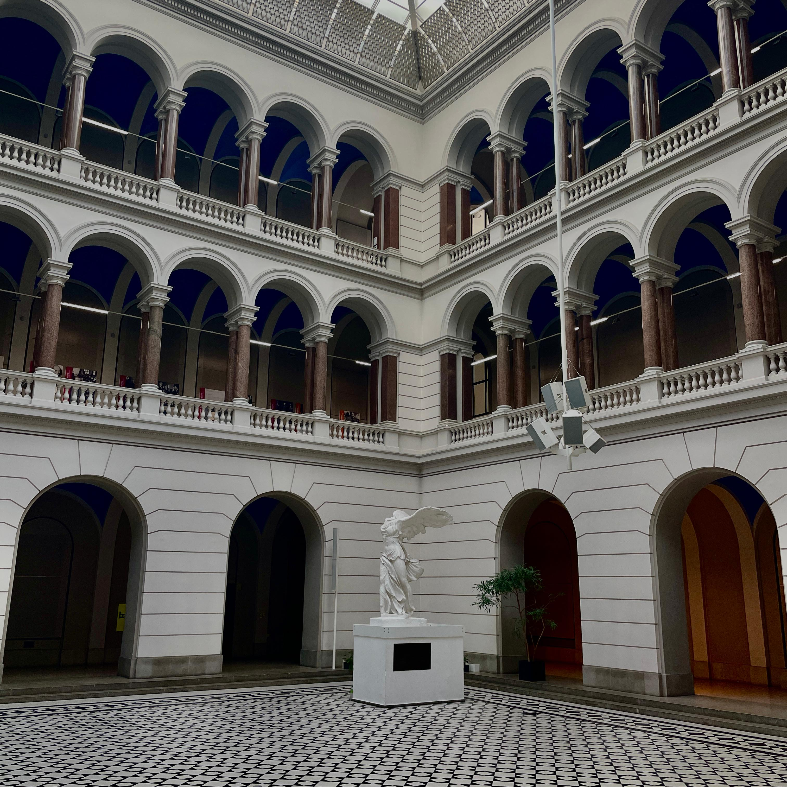
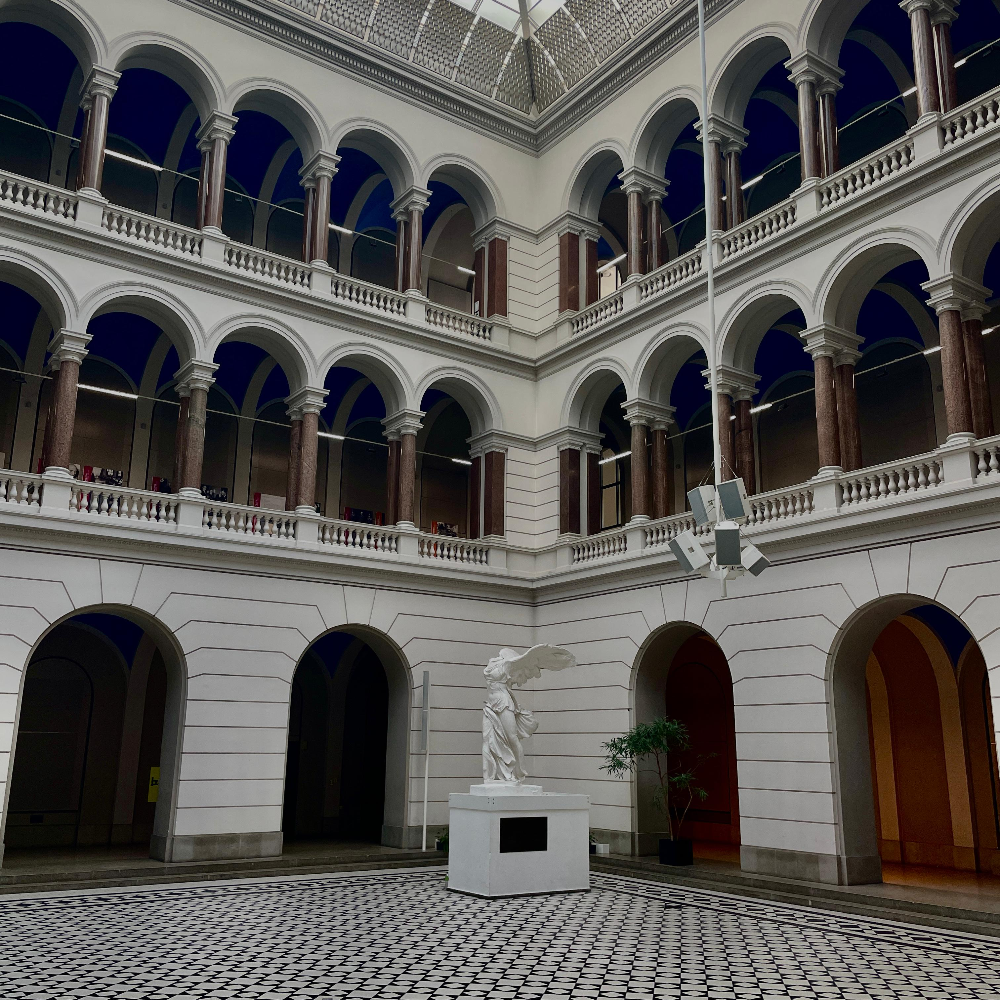
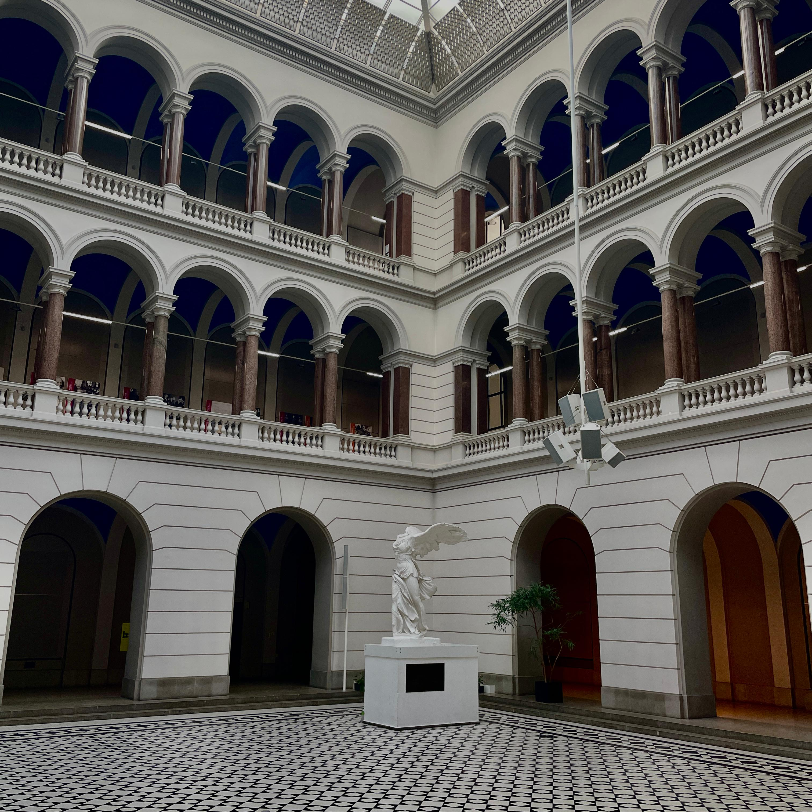

\

\
What to do: The main building houses the largest lecture hall (Audimax), along with numerous classrooms, and the Campus Center is situated on the ground floor on the south side.

\
Next Magic Word: Click or touch the Mystery Box above and see the image behind. Find the statue in the Main building [H]. The next Magic Word consists of the 9 letters of the ninth word read backwards on the inscription of the statue. WRITE THE MAGIC WORD ALL CAPS.
Next location: Volkswagenbibliothek / Library [BIB]
Main Building: The main building of the Technical University of Berlin was first constructed in 1884, designed in a grand neo-Renaissance style to reflect the importance of engineering and technical education at the time. However, during World War II, the building was heavily damaged in the bombing raids and the fierce fighting during the Battle of Berlin. Much of it was left in ruins by the end of the war in 1945. In the post-war period, the university began rebuilding the main building, preserving some of the original architectural features while also adding modern elements. By the 1960s, the reconstruction was mostly completed, and the main building returned as a symbol of academic resilience. Today, it remains a key part of the campus, housing the university’s largest lecture hall, classrooms, and administrative offices.